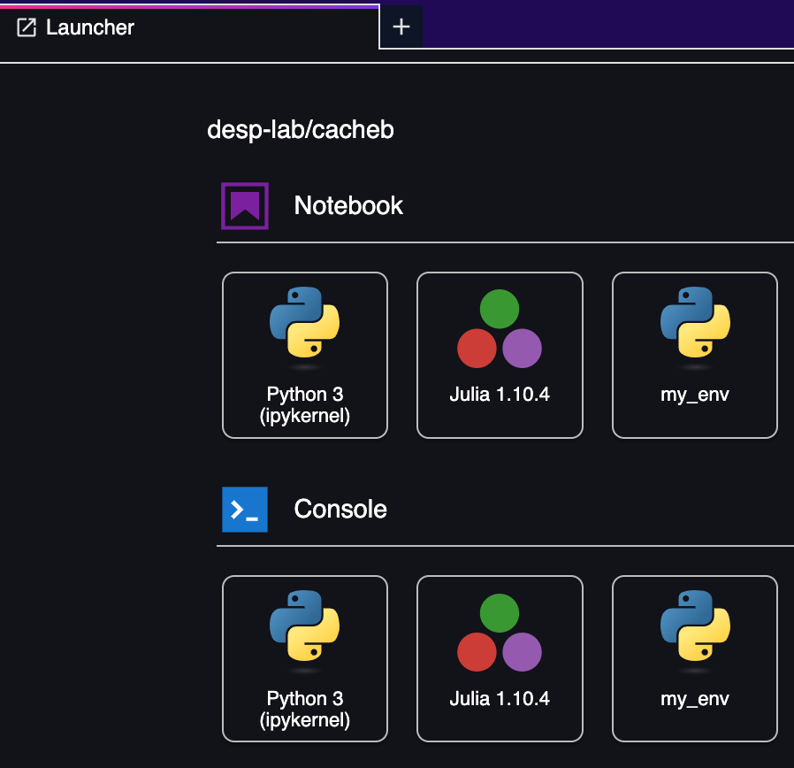

Using the Python API
The Python API is a set of functions and methods that allows developers to interact with Python applications and libraries. These APIs are used to perform a wide range of tasks, such as retrieving data, sending commands, and integrating with other systems.
Python APIs are typically implemented as modules or packages that can be imported into Python code. Once an API is imported, developers can use the functions and methods provided by the API to interact with the application or library.
Some examples of popular Python APIs that will be available in the Code Lab:
Requests: A library for making HTTP requests
NumPy: A library for scientific computing
Pandas: A library for data analysis and manipulation
Scikit-learn: A library for machine learning
GDAL: A library which is a set of Python bindings for the GDAL geospatial data abstraction library. GDAL is a translator library for raster and vector geospatial data formats.
To use a Python API, developers typically need to:
Install the API module or package. This is optional if the list of packages needed to the user is already available in the default installation.
Import the API into their Python code and/or notebooks.
Use the functions and methods provided by the API to interact with the application or library.
Default list of packages
You can retrieve thhe list of pre-installed packages by:
Opening a Terminal,
Typing the command conda list.
Install new packages
When installing new packages, you can leverage Python environments. Read more at Going Deep: Ensuring Reproducible Results.
The following steps create an environment, install an arbitrary package and make it available to be used in a Notebook.
Create a new environment?
python -m venv /home/jovyan/my_env
Activate it
source /home/jovyan/my_env/bin/activate
Install a new package
pip install dvc # dvc is an arbitrary package in this example.
Enable the environment for usage in a notebook’s kernel
Type:
pip install ipykernel
python -m venv /home/jovyan/my_env
ipython kernel install --user --name=my_env
Refresh the browser.
Test the environment
The steps above results in a new entry in the GUI called my_env:
{kind=link}
In which it is possible to import the newly installed module:
{kind=link}
Going Deep: Ensuring Reproducible Results
A dedicated Python environment is essential for achieving reproducible results with your Python notebooks. Here’s how it helps:
Isolated Dependencies: An environment allows you to manage the specific versions of libraries and packages required for your notebook. This prevents conflicts with other projects or system-wide installations that might have different dependencies.
Repeatability Across Systems: By capturing the exact set of packages and their versions within the environment, you can ensure your notebook executes consistently, regardless of the machine or environment it’s run on. This is crucial for sharing notebooks with colleagues or replicating your work later.
Consider this scenario:
Without an environment, you might have several versions of libraries installed on your system. If your notebook relies on a specific version of a library (e.g., pandas==1.4.1), running it on another machine with a different version (e.g., pandas==1.5.0) could lead to unexpected behavior or errors.
Using a Python environment solves this issue by guaranteeing a consistent set of dependencies for your notebook, promoting reliable and reproducible results.